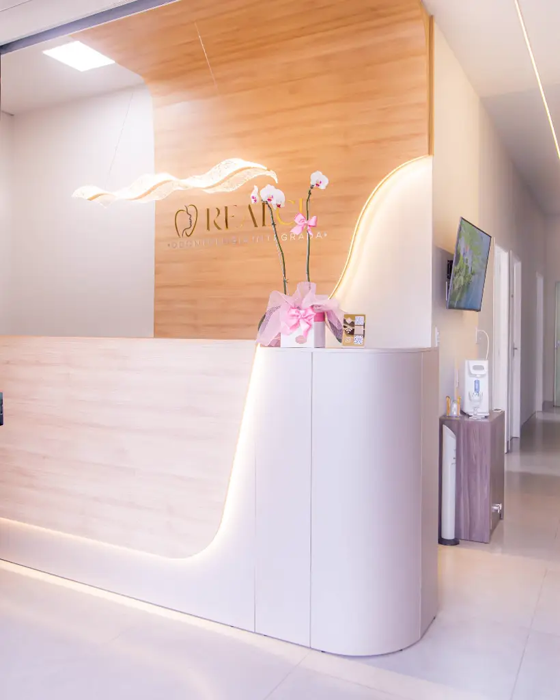
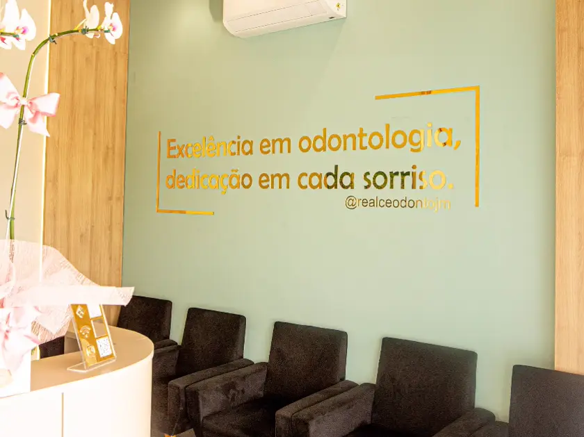

I
A mesma dentista, do início ao fim
Quem começa o seu tratamento é quem termina. Você não encontra um profissional diferente a cada retorno, nem precisa explicar seu caso de novo.
Realçando o melhor do seu sorriso, em João Monlevade. Ortodontia, clareamento, implantes e clínica geral — sem enrolação, com tratamento objetivo e acompanhamento sempre da mesma profissional.

Quem começa o seu tratamento é quem termina. Você não encontra um profissional diferente a cada retorno, nem precisa explicar seu caso de novo.
Tratamento objetivo e sem demora. Na primeira consulta você entende o que precisa ser feito, em quantas etapas e em quanto tempo.
Antes da estética vem a saúde. Cada plano de tratamento parte do que a sua boca precisa, não de um pacote pronto.
Odontologia integrada: da manutenção do dia a dia ao alinhamento e à estética do sorriso, no mesmo lugar e com a mesma profissional.
Aparelho para alinhar os dentes e corrigir a mordida, de crianças a adultos, com manutenção sempre com a mesma dentista.
Clareamento feito depois da avaliação da saúde da gengiva e do esmalte, para devolver a cor natural dos dentes.
Reposição de dente perdido com planejamento prévio e acompanhamento em cada etapa da recuperação.
Profilaxia e orientação de higiene para manter a gengiva saudável — a base de qualquer tratamento que dure.
Restauração de dente danificado ou cariado, com material que acompanha a cor do seu dente.
Extração de sisos, inclusive inclusos, com planejamento prévio e acompanhamento da recuperação.
Acompanhamento do crescimento e da troca dos dentes, num ambiente pensado para a criança se sentir à vontade.
Aplicação de toxina botulínica, com avaliação individual antes de qualquer procedimento.
Clínica nova, com recepção, sala de planejamento e consultórios próprios. Quem tem receio de dentista costuma reparar primeiro no lugar — por isso ele está aqui inteiro, antes de você marcar.


“Ótimo atendimento e Dra. Fernanda muito simpática.”
“Clínica excelente! A começar pela recepção acolhedora e educada da equipe de secretários! Os dentistas são extremamente competentes, cuidadosos e muito tranquilos.”
“Tirou meu medo de dentista ao extrair dois sisos inclusos no mesmo dia, sem nenhuma dor ou qualquer contratempo. Já indiquei a umas 8 pessoas que trabalham comigo.”
“Recebi uma indicação da Dra. Fernanda e adorei. Atendimento impecável tanto dela quanto do Thomás. Sempre fui muito bem recepcionada e os tratamentos que fiz até agora tiveram resultado efetivo.”
“Excelente atendimento, ambiente super aconchegante e organizado. O atendimento da Dra. Fernanda foi espetacular!”
“Recomendo muito a Dra. Fernanda por sua dedicação em fornecer cuidados dentários de alta qualidade, aliados à sua empatia e atenção aos pacientes.”
Se você tem plano pela empresa ou pelo serviço público, é possível que já esteja coberto aqui. Na dúvida, chame no WhatsApp que a gente confere para você.

Cirurgiã-dentista formada em Odontologia e com especialização em Ortodontia, responsável técnica da Realce Odontologia Integrada, em João Monlevade.

“Excelência em odontologia, dedicação em cada sorriso.”
Pelo WhatsApp (31) 97215-9568. É o número da clínica, e quem responde é a nossa secretaria, dentro do horário de atendimento.
Sim. Atendemos PASA e IPSM. Se o seu plano for outro, mande uma mensagem que a gente confere para você.
A Dra. Fernanda Magalhães, do início ao fim. Você não troca de profissional no meio do tratamento nem precisa recontar o seu caso a cada retorno.
Sim. A Dra. Fernanda atende casos ortodônticos de crianças a adultos, e a clínica acompanha o crescimento e a troca dos dentes desde cedo.
A primeira consulta é de avaliação: a dentista examina, explica o que precisa ser feito e em quantas etapas. O tratamento é planejado com você a partir daí.
Na Rua Negrão de Lima, 51 — Bairro Alvorada, João Monlevade/MG, CEP 35930-054. O mapa está logo abaixo.
De segunda a sexta-feira, das 9h às 12h e das 14h às 18h. A clínica fecha para o almoço entre 12h e 14h, e não atende aos sábados e domingos.

| Segunda a sexta | 9h às 12h 14h às 18h |
|---|---|
| Sábado e domingo | Fechado |